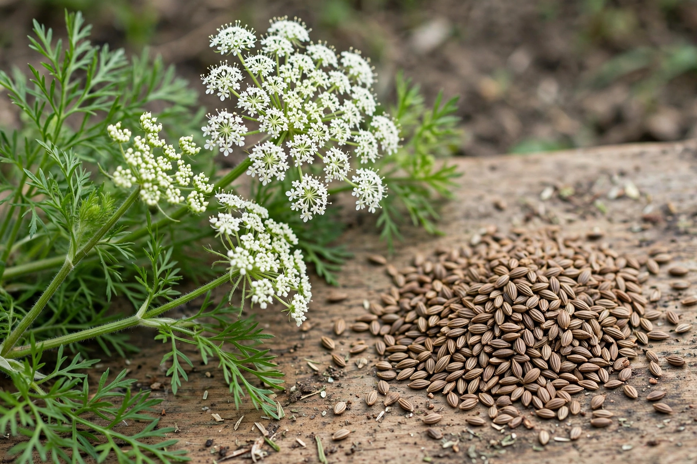

Anise (Pimpinella anisum), also called aniseed or rarely anix, is a flowering plant in the family Apiaceae native to the eastern Mediterranean region and Southwest Asia. Its flavour is similar to that of liquorice, fennel and star anise, and it is widely used as a spice and flavouring.
| Anise | |
|---|---|
| Scientific name | Pimpinella anisum L. |
| Family | Apiaceae |
| Native range | Eastern Mediterranean, Southwest Asia |
| Key compound | Anethole |
Anise is an annual herb growing to about 1 metre tall, with feathery leaves and small white flowers in umbels. The fruit is an oblong, dry schizocarp 3–5 mm long, harvested as the spice aniseed. The dominant flavour compound is anethole, which accounts for some 80–90% of its essential oil.
Anise flavours a wide range of foods and drinks: Italian biscotti and sausage, German Pfeffernüsse, Indian and Pakistani dishes, and liqueurs such as Greek ouzo, French pastis and anisette, Turkish rakı and Spanish anís. When water is added to these spirits they turn milky — the "ouzo effect" — as anethole emulsifies. In traditional medicine anise has been used as a carminative and mild expectorant.
The plant was first cultivated in Egypt and the Middle East and was valued in Rome, where anise cakes were served at feasts; Charlemagne ordered it grown on imperial farms. It should not be confused with star anise, an unrelated Asian spice with a similar flavour.
Anise — recreated from memory.